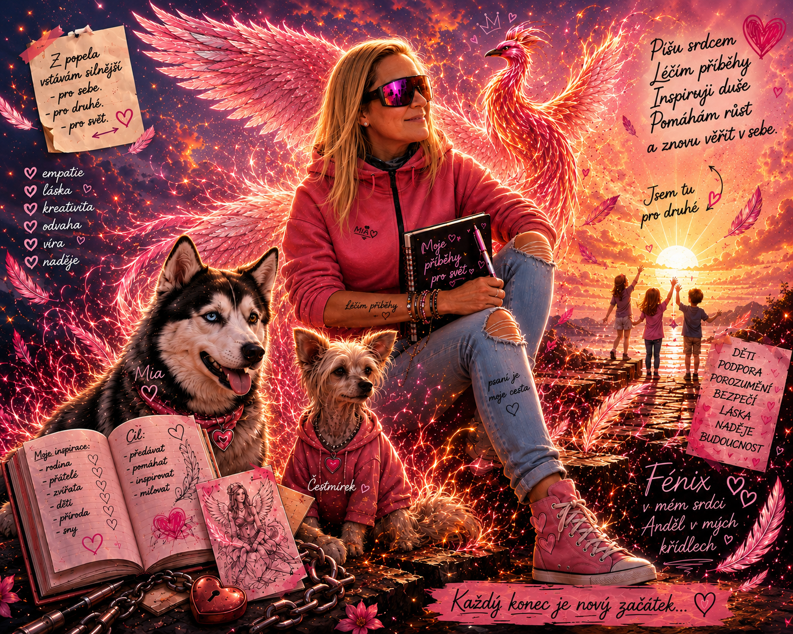

Tady každý příběh začíná srdcem.
Vítej ve Světě Carmen.
Tady každý příběh začíná srdcem.
Svět komiksů, knih, ilustrací a skutečných příběhů o odvaze, zvířatech, naději a druhých začátcích.
Vstoupit a poznat Carmen
„Každá jizva může být začátkem nového příběhu.“
Dnes vznikl Svět Carmen.
První stránka. První sen. První krok.
Děkujeme, že jste u toho s námi. Toto je teprve první kapitola.
Svět Carmen postupně roste. První vydaný komiks Beruška a Brouček už si můžete přečíst a další příběhy právě vznikají.
Děkujeme, že jste součástí této cesty. Každý nový příběh vzniká srdcem a věříme, že si v něm každý najde něco, co ho osloví.